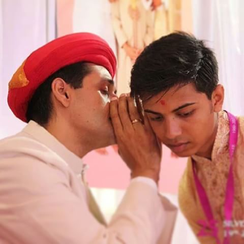
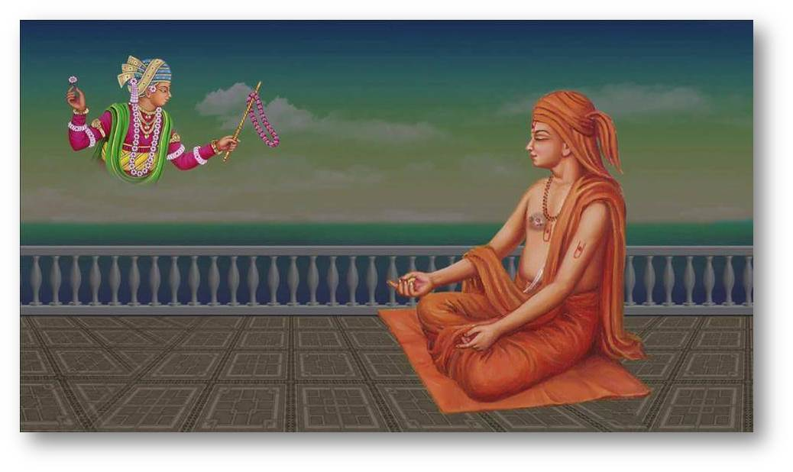
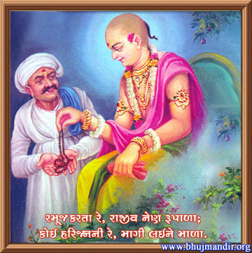
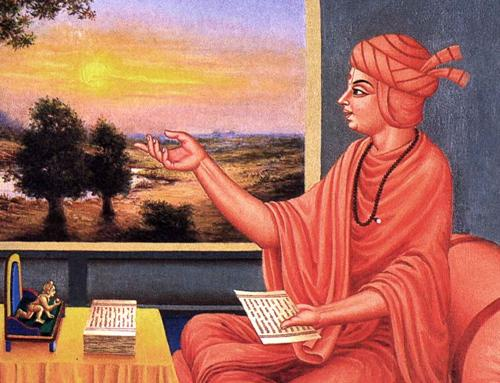
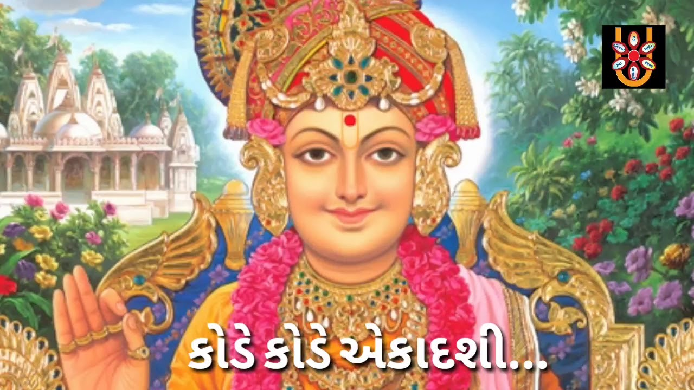
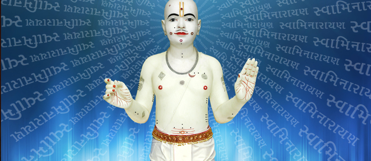
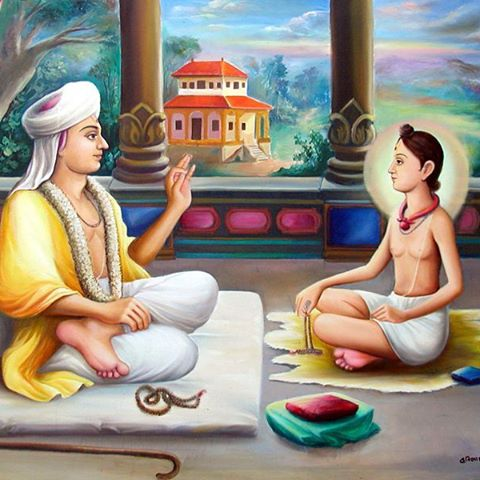

The Secret Blessing (Gurumantra)
This roundtable will focus on not just the basics of what the Gurumantra is but more so, the mentality and personal levels one should have before they obtain the Gurumantra. This session will also touch on the implications & daily routine(s) one must follow after taking the Gurumantra. The power and status one achieves from the Gurumantra, as well as its origins and the purpose for Bhagwan Swaminarayan to establish this legacy will also be touched on. You either have it or you don’t, hence it is a secret blessing that will open up doors if done in the right way.

Mind like a Monkey (Dhyaan/Maansi)
In our everyday lives, thousands if not tens of thousands of different thoughts go through our mind. Swaminarayan Bhagwan has said that our mind is like a monkey; it has similar traits of never sitting in one place.
This roundtable will help share methods and some simple techniques on how to focus more on Bhagwan. In particular by doing Dhyaan (mental worship) of His Divine Murti, how one can reap the benefits and derive peace within. Coupled with this is the art of Maansi pooja – Your personal love connection with the Almighty. Learn how to experience a completely different emotion, almost as if out of this world, where you can extend the boundaries as much as you like. Find out how small steps and making the time for thinking about our beloved Ghanshyam Maharaj can lead to a totally different sense of happiness in the future.

The Day-Night One Day International (Chesta)
The importance of doing Satsang in the evening is we burn away any sins committed knowingly or unknowingly during the day. At home or at Mandir, on the train home or just before we go to sleep, remembering the Lord and His Divine daily experiences opens up the path to achieving Greatness.
This roundtable will focus on concentrating our minds and achieving peace within when singing the kirtans (devotional singing), prescribed in the “Chesta” verses. After a long tiring day, we can always find time to go out, play football or watch a movie but to take 15 minutes out from our evening and sing a kirtan or two from the “Chesta”, takes our inner strength with rewards not achieved elsewhere.

The Key to the Greatest Lock (Sant Samaagam)
Akshardham... Our biggest target!
To unlock your door to Bhagwan’s Divine Abode, He has gifted the key to His beloved Santos. Since the beginning of time, true Santos have guided countless souls in attaining Bhagwan’s Sukh (realising Bhagwan’s true form). The scriptures countlessly state ‘Bhagwan and His Santos to be Kalyankaari’.
This roundtable will focus on the true impact of how having an association with such a unique person can have. Their love and blessings can positively change our lives in an instant, thus Bhagwan has named them to be our true spiritual mothers. Find out how others have gained from such experiences… Unlock your true potential!

Get out of Jail Free Card (Ekadashi)
Twice a month we are given the opportunity to clean our “sin slate” and also top up our accounts immensely, with the currency that matters the most – “punya” (good deeds). Ekadashi can be regarded as a 15 day alarm clock to alert us in connecting ourselves to Bhagwan more and conversely, less to the world around.
Ekadashi is much more than simply an excuse to have an endless choice of food options! By itself, Ekadashi has the power to bring Akshardham at your fingertips and release you from the prison of life and death. With such an important lifeline given to us so frequently, this roundtable will discuss how one can truly make the most of this special day.

Mes Que Un Word (Swaminarayan Mahamantra)
To some it is just a word...to those who have attained Bhagwan, it is the sole purpose for making the most of this human life.
What are we referring to? “Swaminarayan”
In the past people were not educated like we are today. Most couldn’t read or write and very few could deliver or hold an audience. However, one thing everyone knew was to simply chant ‘Swaminarayan’. With every breath, every step and every action, it was this very chanting of Swaminarayan that elevated their lives and souls to the highest level. Such is the power of the Lord’s name. This roundtable will share with you how simple it is to live a life for our Lord Swaminarayan, for it is us who complicates it in the first place.

The Life Jacket (Dharma)
Bhagwan Shree Swaminarayan emphasised the importance of Dharma in one’s life more than anything else. Along with Dharma, there is Bhakti, husband and wife, hand in hand. The Vachanamrut states “a person without Dharma, is like crossing a sea with a heavy rock on your head, you will definitely drown”. Thus, Dharma is our life jacket. Have Dharma in our lives and with it comes the foundations to truly please Maharaj. Yet in today’s Satsang, we may not give it as much emphasis as we do with other areas. This roundtable will give further insight into the power of Dharma and give an opportunity for the participants to share experiences focused on how we can apply small changes to make huge differences to our lives, for the better.